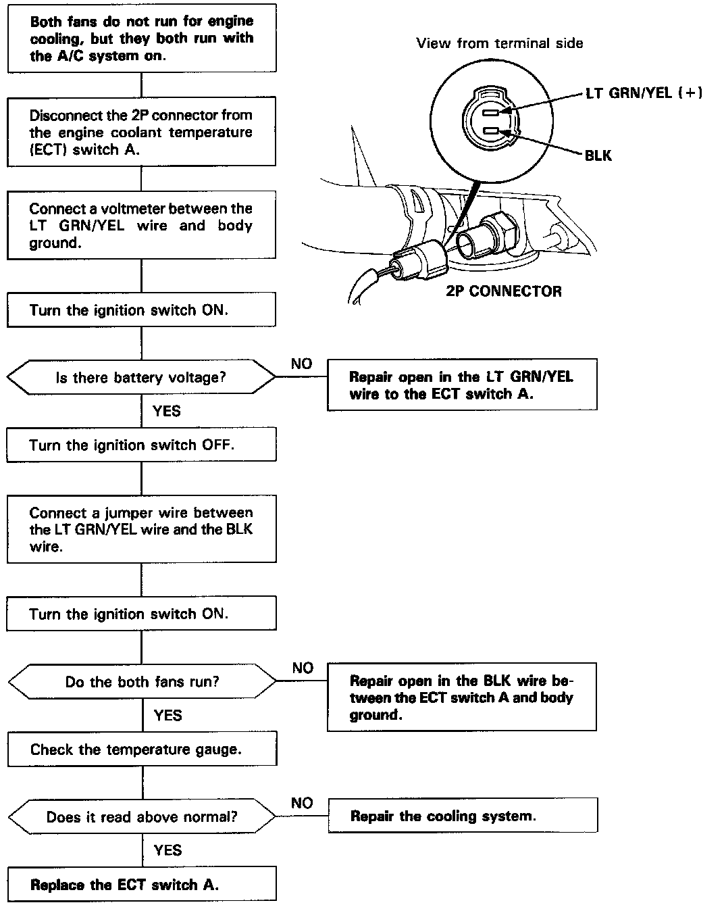

Operation CHARM
: Car repair manuals for everyone.
Home
>>
Acura
>>
1993
>>
Vigor L5-2451cc 2.5L SOHC G25A4 FI
>>
Repair and Diagnosis
>>
Heating and Air Conditioning
>>
Testing and Inspection
>>
Component Tests and General Diagnostics
>>
Circuit Flowcharts
>>
Engine Coolant Temperature (ECT) Switch A
Engine Coolant Temperature (ECT) Switch A
Engine Coolant Temperature (
ECT
) Switch A
